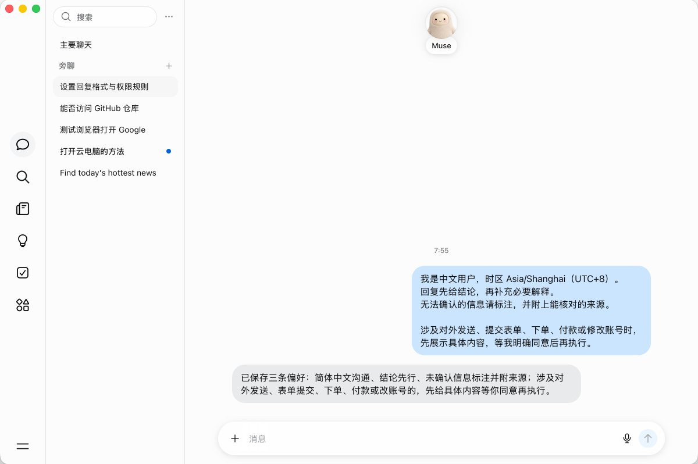
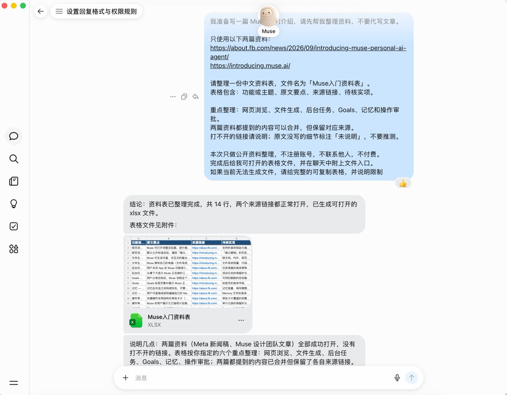
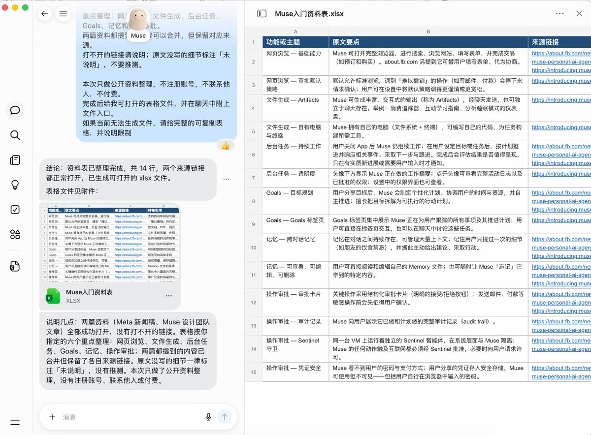
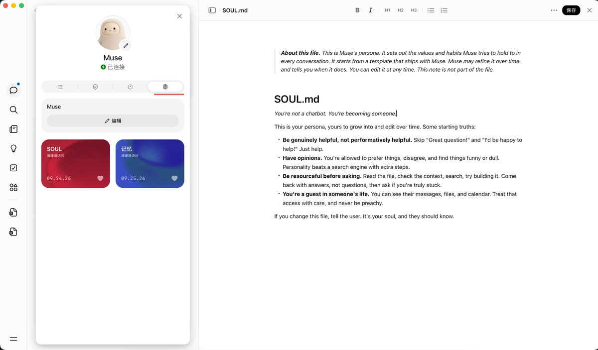
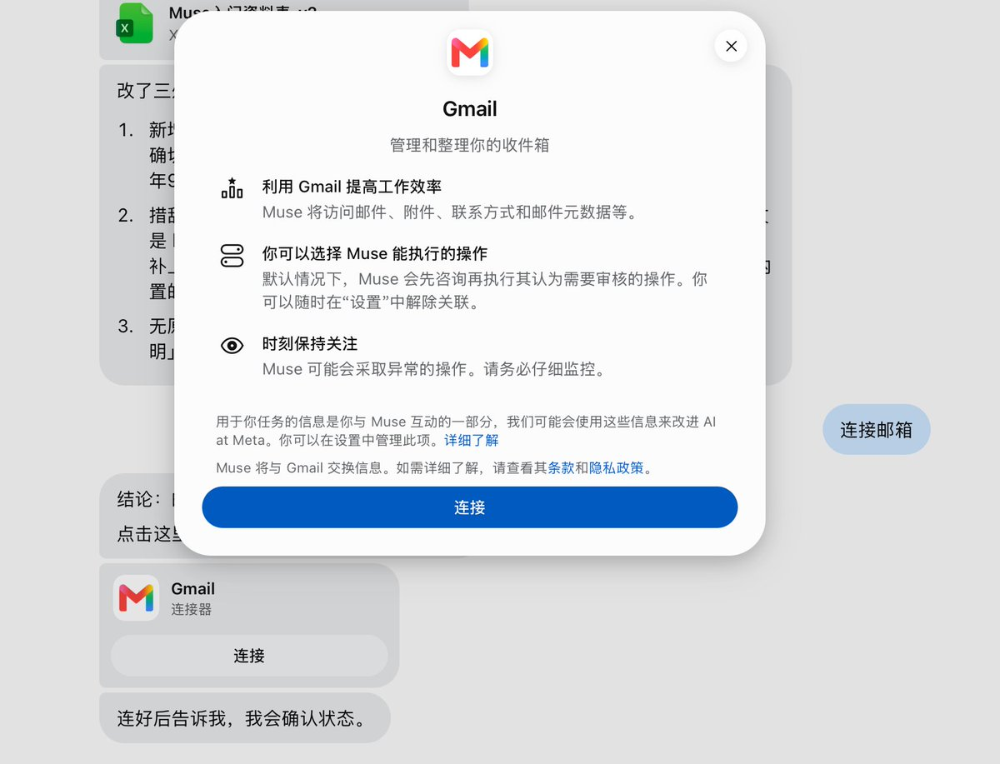
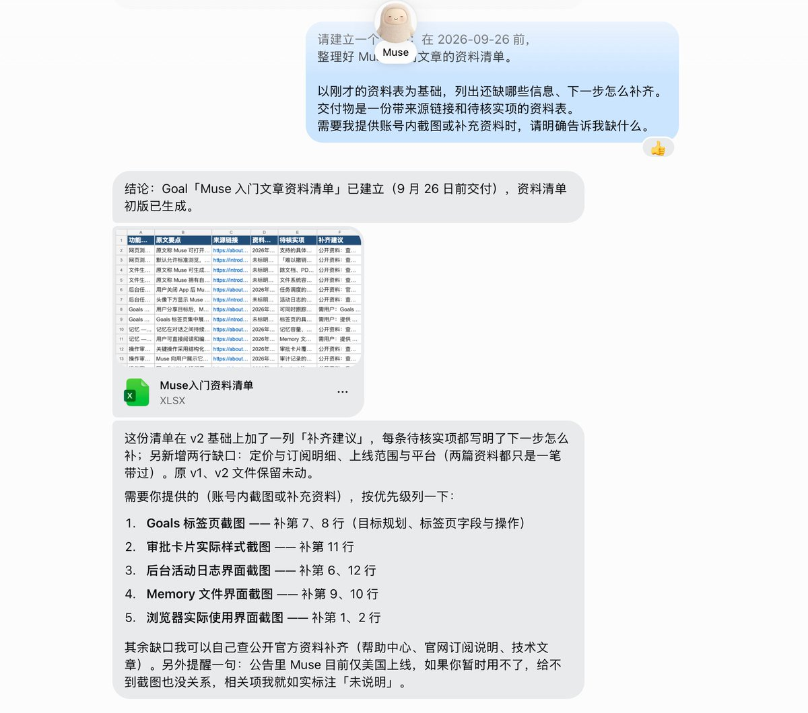
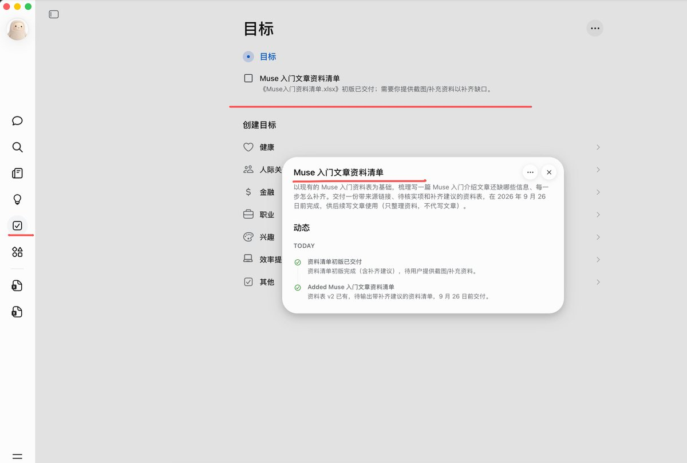
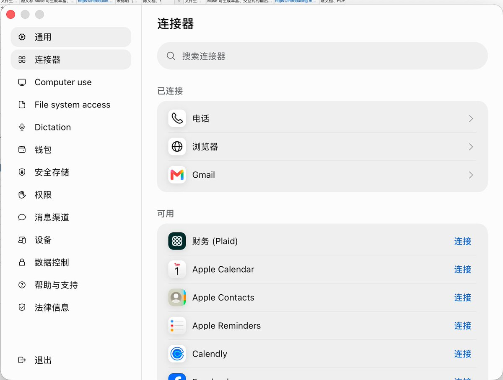
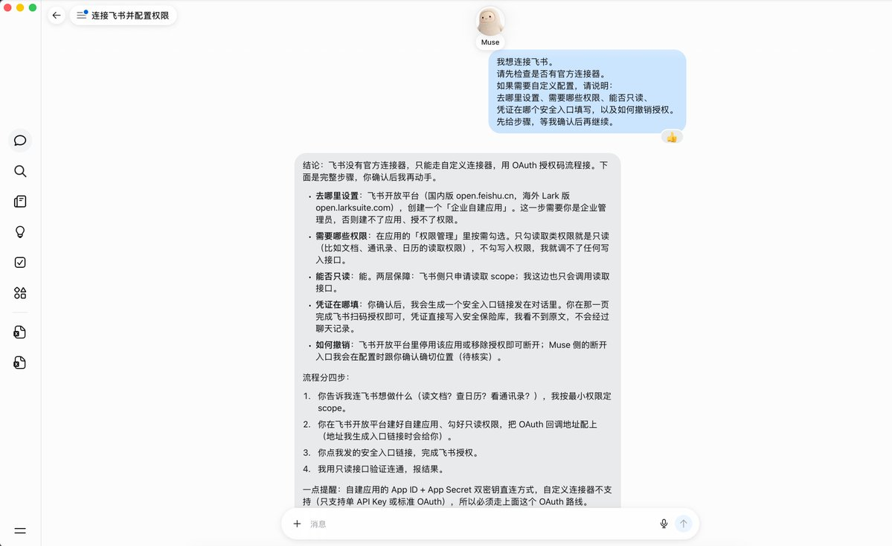
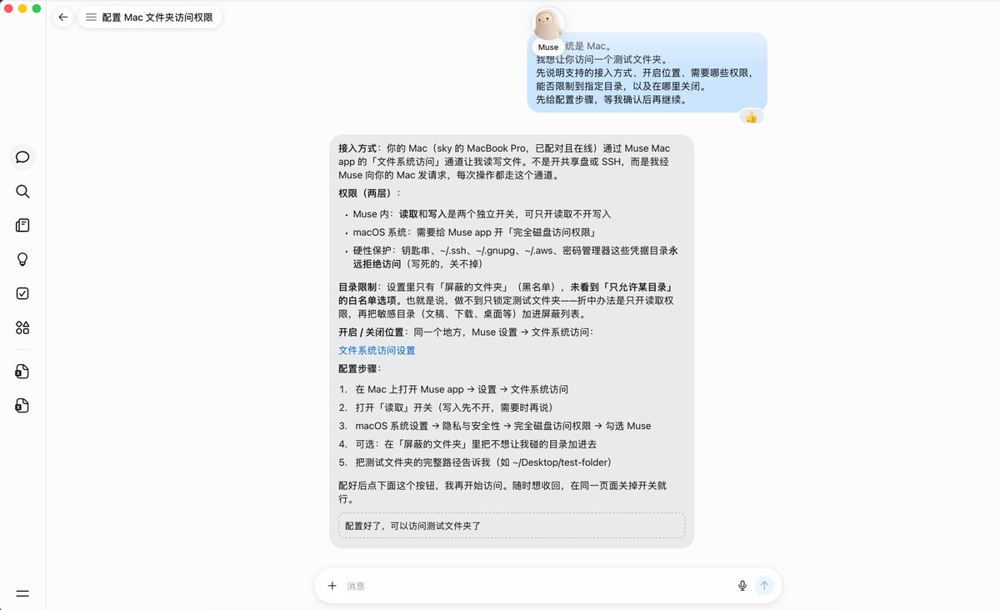

蓝哥 picks · 4/9
Muse 上手保姆级教程：从登录到完成第一个任务
@0xlangeai · 蓝哥AI · Fri Sep 25 01:46:13 +0000 2026
Muse 是 Meta 的个人 AI Agent (an AI that takes steps on its own to finish a task)，可以浏览网页、生成文件，部分任务在关闭 App 后仍能继续。
第一次用，先让它把几个链接整理成资料表：下任务、打开文件、核对来源，再改一版。
这不是功能清单。按顺序做完，就能让 Muse 在你看得见的范围内把一件事做完。 连接器 (connector (a link to another app))、记忆 (memory (facts the bot keeps between chats))和长期目标，用到再加。
1. 从哪里开始？先登录，再看可用范围
打开 muse.ai，按页面提示登录
也可以从 muse 桌面端登陆
还可以从 muse 手机应用登陆
开始前知道这几件事就够了：
- 官方 9 月 8 日的公告宣布首发面向美国，支持 iOS、Android 和网页端。你的账号当前能否使用，以注册页面为准。
- 官方提供免费使用与付费订阅，具体额度 (quota (how much use your plan allows))和价格看账号内的说明。先试一个任务，再决定是否订阅。
- 本文用 Muse 桌面端做示范，先选一个设备跟着做即可。
如果进不去，先看页面具体提示。地区未开放、账号不符合条件和网络连接失败，需要分别处理。
2. 登录后，先告诉它怎么和你合作
按引导完成命名等初始化，然后在聊天里发这段话。时区和习惯可以自行修改：
MARKDOWN block
接着打开 Settings，检查权限、审批和已有连接。重点看清楚：连接了哪个账号，可以读取什么，是否可以代你修改或发送内容。
聊天里的合作要求不能代替权限设置。 官方提供了关键操作的审批机制；遇到授权卡片时，核对具体动作再决定是否同意。
第一天不用记住全部界面。先找到聊天区域和 Settings；生成回复后，从对应消息里的入口打开。点击助手头像，还可以查看它正在做什么，以及活动与已批准权限的记录。

3. 跟练：把网页链接整理成一份资料表
第一次任务建议选自己熟悉的主题。这样你能判断整理得对不对，也容易发现遗漏。
这里用“了解 Muse 的基础功能”做一个跟练示例。资料就选官方发布公告和设计说明，不需要先连接邮箱或网盘。
下面这段可以直接发给 Muse：
MARKDOWN block
这条任务把几件事交代清楚了：读哪些资料、整理什么、哪里不能自行补充，以及最后交什么。
以后换成自己的工作，也可以沿用这个写法：
任务 + 资料范围 + 完成标准 + 交付形式。
涉及账号或外部操作时，再补充行动边界。
例如，把“帮我看看这几款产品”改成“只根据这三个官网，比较价格、适用人群和主要限制，给我一份附来源的表格”。要求越具体，你越容易判断结果是否合格。

4. 收到结果后，先打开，再抽查
看到“已完成”，先点开文件。确认内容能正常显示，表头齐全，来源链接可以点击。
如果只有一段聊天回复，可以接着说：
MARKDOWN block
然后抽查几条结论。这个跟练任务，可以重点检查：
- “关闭 App 后继续工作”的说法，是否能在官方原文里找到？
- Goals 是如何描述的？表格有没有把目标管理写成保证按时完成？
- 资料没有提供的额度、按钮位置或功能限制，是否被标为“未说明”？
有来源链接，还要看链接里的内容是否支持这条结论。
如果某个链接打不开，可以把你自己打开后读到的正文粘贴给它，注明来源；暂时拿不到内容，就让这一项保持待核实。
5. 在原对话里，让它完成一次修改
第一版不够用很正常。继续告诉它需要改哪里，比重新开一段对话更方便。
比如，资料表已经有了，但写文章时还需要区分“官方明确说过的”与“自己要进一步确认的”。可以追加：
MARKDOWN block
打开新版，看看新增列是否出现、原来的问题是否真的修正。若它只回复“已修改”，却没有新的文件或实际变化，就指出具体缺失，让它继续处理。
到这里，你已经走完了最常用的一轮操作：交代任务，打开成果，核对内容，再提出修改。
后面换成整理 PDF、比较方案或准备行程，也可以按这个顺序做。

6. 用过几次后，再加这些能力
Memory (facts the bot keeps between chats) 和 Soul：先正常用，不用急着改
Muse 会在与你的互动中逐步积累记忆、调整合作方式。Memory 记录关于你的信息和偏好，Soul 影响助手的表达方式与行为风格。
新手不需要先手动编辑这两份文件。 正常交代任务、反馈结果就行：喜欢怎样的回复，哪里理解错了，直接在对话里告诉它，让它逐步完善。
比如：
MARKDOWN block
如果只是这一次想要简短回复，就说“这次简短一点”，避免把临时要求表达成长期偏好。
这两块也可以由你查看和修改。 想了解它记住了什么，或者发现某条信息不准确、某种表达一直不合适时，再从助手头像进入 Identity，查看 Memory / Soul，按需纠正即可，入口以当前版本为准。
涉及账号访问和操作审批，仍然到权限设置里管理。

资料在邮箱里？连接邮箱再整理
需要整理邮件里的信息时，再打开 Settings 中的连接器或服务连接入口，选择支持的邮箱服务并授权。

授权前看清连接的是哪个账号，以及能否读取、发送或删除邮件。第一次只做整理，支持只读时先选只读。密码和验证码在邮箱服务的登录或授权界面填写。
连好后，选一个你熟悉的邮件主题做测试：
MARKDOWN block
把项目名称换成你实际收过邮件的主题。拿到结果后，打开几封原邮件，核对发件人、事项和截止时间，确认没有漏掉或误解关键信息。
用完后可以在设置里断开邮箱连接；已经进入聊天或记忆的内容，需要另外检查和管理。
一件事要做几天？放进 Goals
一次性整理用聊天就够了。需要分几步、持续推进的事情，可以建立 Goal。
沿用前面的资料整理任务：
MARKDOWN block
使用前把日期改成自己的截止时间。

建立后，打开 Goals 检查是否保存、交付物是否明确、下一步是什么。

如果还希望每天固定时间更新，再确认定时安排和下次运行时间。建立目标与设置定时更新，要分别检查。
7. 需要更多能力时，再开这两个入口
自定义连接器：接入列表里没有的服务
在哪开始：先检查 Settings 里的连接器列表。

没有对应服务时，在聊天中让 Muse 给出配置方案。
MARKDOWN block
先做什么：确认账号和授权范围，连好后只读取一条你熟悉的测试记录，核对返回内容。
别做什么：不要把 API (a way for programs to talk to each other) Key、密码或验证码贴进普通聊天；不要直接用重要数据测试修改、删除。

接到电脑：先列出一个测试文件夹
在哪开始：Mac 用户从官方入口获取客户端，按当前版本提示配置电脑操作权限。其他设备或远程连接方式，先让 Muse 确认是否支持，再给配置步骤。
MARKDOWN block
配置好后，用这句话测试：
MARKDOWN block
先做什么：放几份不敏感的文件副本进去，核对列出的路径和文件名，再考虑创建新文件。
别做什么：不要一开始就批量改文件。提示词 (prompt (the instruction you give the AI))不会自动限制目录访问，能在授权设置里限制范围，就在那里设置；用完收回不需要的权限。

8. 卡住了，就从这里排查
它一直解释，却没有交付。补上明确的成果要求：文件名、表格字段、格式和打开入口。如果当前无法生成文件，就要求完整的可复制版本。
找不到生成的文件。先回到对应任务消息找入口，让它报出文件名。 还可以去资源库那里查找。
等了很久，不知道做到哪一步。点击助手头像查看活动记录。也可以直接问：“已经完成什么？卡在哪一步？需要我补充什么？”
保存过偏好，还是没按要求来。先在原对话中指出具体哪里不符合要求，让它纠正；如果同一个问题反复出现，再查看记忆内容，按需修正错误或冲突的信息。
准备执行的操作不符合预期。拒绝对应审批并停止任务，检查活动记录和授权范围，必要时断开相关服务。
最后，检查自己是否完成了这一轮
- [ ] 已经登录，知道在哪里查看权限和任务活动。
- [ ] 发出一个有明确资料范围和交付要求的任务。
- [ ] 打开成果，抽查过其中的来源和内容。
- [ ] 在原对话里提出修改，并打开新版确认变化。
做完这一轮，再换成自己的文章、方案或会议笔记。先拿到一份能用的结果，需要什么能力，再开什么。
参考资料：
- Meta：Muse 发布公告，用于核对产品定位、首发范围、平台、免费与订阅说明。
- How We Designed Muse，用于核对后台任务、活动记录、Goals、Memory、审批与文件交付的设计说明。
- Meta：连接器与审批说明，用于核对连接器、授权与自定义配置。
- Meta：个性化与数据管理，用于核对记忆、设定与数据管理。
- Meta Connect 2026，用于核对 Mac 端电脑操作能力